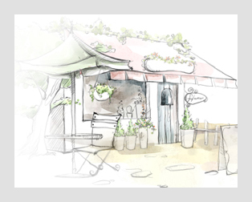

주간보호서비스는 부득이한 사요로 가족의 보호를 받을 수 없는 심신이 허약한 노인을 낮 동안 센터에 입소시켜
필요한 각종 편의를 제공하며 어른신의 생활안정과 심신기능의 유지, 향상을 도모하고, 그 가족의 신체적,
정신적 부담의 경감을 위하여 제공하는 서비스입니다.
->이용시간 : 평일 9:00~ 17:00(송영시간 포함)
->이용대상 : 노인 장기요양보험 1~3등급 어르신, 노인돌봄서비스 대상자 어르신
->이용절차 : 샬라샬라샬라샬라샬라샬라샬라샬라샬라샬라샬라샬라
재가노인지원서비스는 경제적, 정신적,신체적 이유로 독립적인 일상생활을 영위하기 어려운
노인과 복지사각지대의 노인들에게 일상생활지원을 비롯한 각종 필요서비스를 제공함으로써
구축을 목적으로 제공하는 서비스입니다.